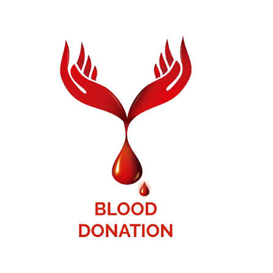

Connecting Blood Donors with Those in Need.

LifeLink is a blood donor management platform designed to connect voluntary blood donors with hospitals and people in urgent need of blood. Our goal is to make blood donation simple, quick, and accessible to everyone.
Every drop of blood can save a life. Through LifeLink, donors can register easily while recipients can quickly search for available donors based on blood group and city.
Help patients receive blood during emergencies.
Bring donors and recipients together instantly.
Encourage more people to become regular blood donors.